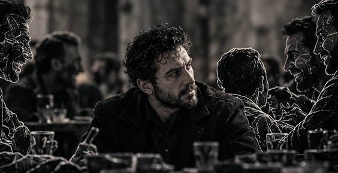

البداية
ليست كل مواجهة تستنزفك بصوت مرتفع
أكبر استنزافللروح.
ليس الخصومة الصريحة، بل التواجد في بيئة معكوسة المعايير؛
مرّر لتنكشف الحكاية
انقلاب المعاييرحين تنقلب
حين تنقلب
الموازين.
بيئة يصبح فيها الصدق تكلّفاً، والنقاء ضعفاً، والمبدأ تزمتاً.
الصدقتكلّف
النقاءضعف
المبدأتزمت
الخطوط المشطوبة لا تلغي الفضيلة؛ إنها تكشف تشويه معناها.

مستنقع التبريرثمنُ أن
ثمنُ أن
تبقى أنت.
حين تجالس من لا يشبه معدنك لن تكتفي بالصمت بل ستُجَرّ رغماً عنك إلى مستنقع التبرير،
تبرر نزاهتك لمن لا يفهم إلا المصلحة، وتعتذر عن ثباتك لمن احترف التلون.
حين تضيق المسارات
الاقتلاع.
الاقتلاع من المألوف حين يضيق بك ما حولك.
هذه صور رمزية مولّدة، وليست صوراً توثيقية لأماكن أو أحداث بعينها.
الثمنالزيفُ
الزيفُ
يبدأ هنا.
حين تخفض سقف مبادئك، كي يتسع للجميع فتخسر نفسك لتكسب ود من لا يزن الأمور إلا بميزان الهوى.
المبدأ في كفّة، والثمن في الأخرى.
المبدأ والثمنأيّ كفّة ترجح؟
الوضوحوفّرْ
وفّرْ
طاقتك.
فالحق أبلج لا يحتاج إلى مرافعات يومية أمام من أدمن العَمى.
مصدر ضوء واحد. لا مرافعة أخرى.
النجاةأصلحْ
أصلحْ
بوصلتك.
وجاور من يرون الفضيلة أصلاً لا استثناءً،
فالمعركة ليست أن تُقنع من باع فطرته… بل أن تنجو أنت بفطرتك حية نقية.
الإبرة لم تستقر بعد.
أن تنجو أنت
بفطرتك حيةً نقية.
بفطرتك حيةً نقية.